FP3級の学科では、FPが越えてはいけない法律の境界線と、社会保険・公的年金の基本が出題されます。保険や投資は、登録を受けずに具体的な商品をすすめると法律違反になります。社会保険は医療保険と介護保険、年金は国民年金のしくみが中心です。この記事では、法令基準日2026年4月1日時点の内容を、FP3級シリーズ第3回の台本にもとづいてまとめます。
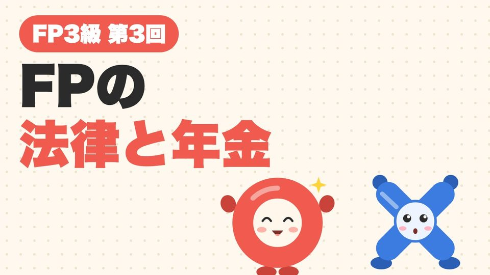
▶ この記事の内容を動画で見る（マルバツ資格塾）01FPが越えてはいけない3つの法律
FPが気をつける法律は、大きく3つあります。まず税金です。個別の税額を計算してあげることはできません。次に法律です。個別の裁判や法律の争いに代わって判断することもできません。そして保険や投資です。保険を売るための募集人登録や、投資を助言するための登録なしに、具体的な商品をすすめることはできません。
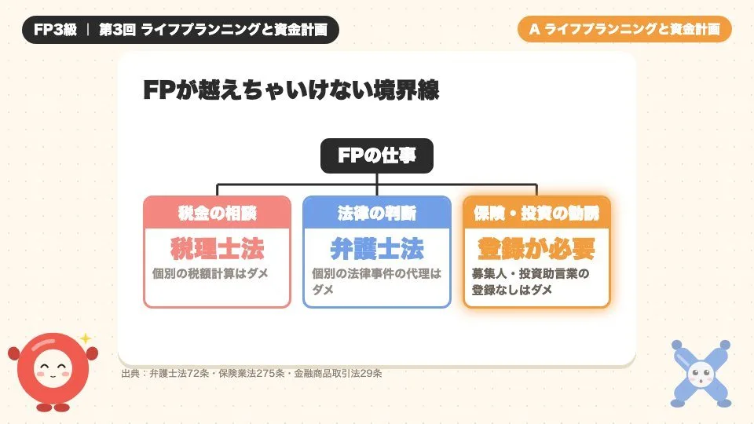
一般的なしくみの説明はできますが、個別の相談に対して具体的な商品をすすめる行為は、登録が必要な「業務」にあたります。
02例題：無登録のFPが保険をすすめたら
ここで、○×の例題を見てみます。
例問題：保険の募集人登録を受けていないFPのタナカさんが、相談者に生命保険のしくみを一般的に説明したあと、この保険に入ったほうがいいですと、具体的な保険会社の商品をすすめた。これは保険業法に違反しない。○か×か。
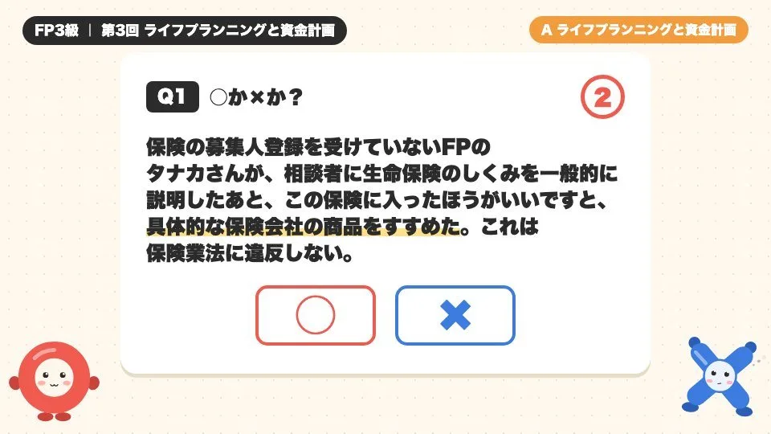
正解は×です。保険の募集、つまり勧誘や契約の手伝いは、内閣総理大臣の登録を受けた人しかできません。しくみを一般的に説明するだけならセーフですが、具体的な商品をすすめたらアウトです。投資のアドバイスも同じで、特定の株を買うべきだと助言するには、投資助言業の登録が必要です。
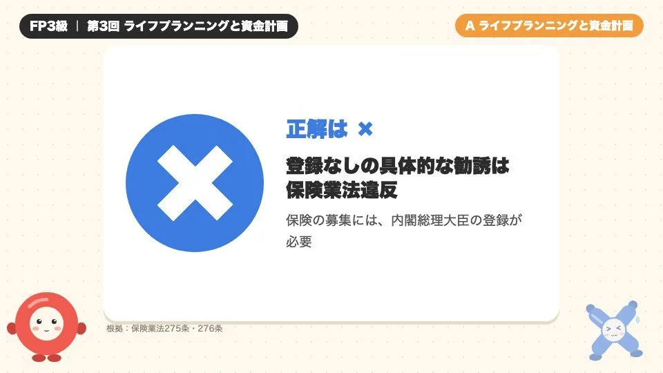
03社会保険の基本：医療保険と介護保険
医療保険は、働き方によって加入する制度が変わります。民間企業の会社員は健康保険で、運営は協会けんぽや健康保険組合です。公務員は健康保険ではなく、共済組合という別の制度に加入します。自営業や無職の人は国民健康保険で、運営は都道府県と市町村です。
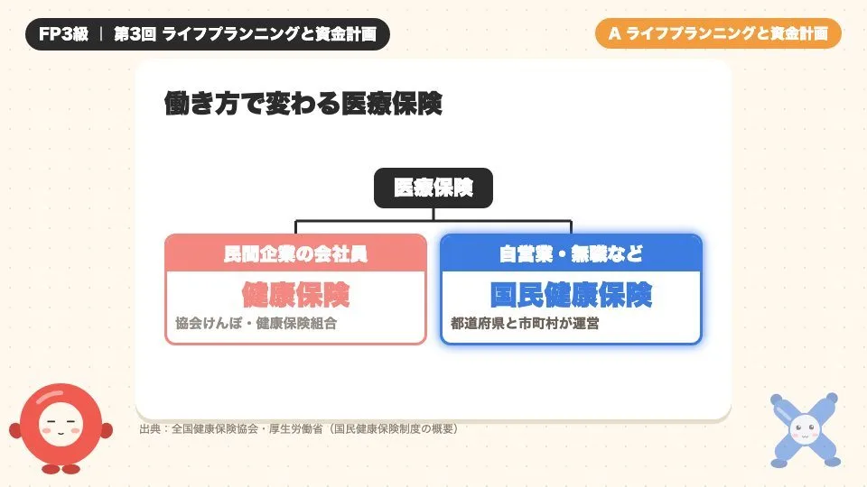
病院にかかったときの医療費の自己負担は、全額ではなく一部だけです。
| 年齢 | 自己負担割合 |
|---|---|
| 小学生〜69歳 | 3割 |
| 70〜74歳 | 2割（現役並み所得者は3割） |
| 75歳以上 | 原則1割（一定以上の所得は2割、現役並み所得は3割） |
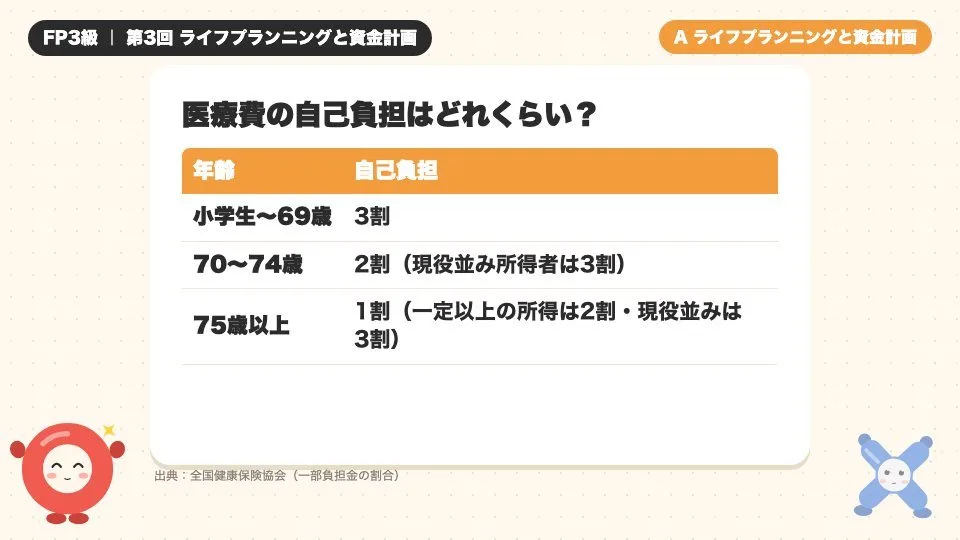
家族を健康保険の扶養に入れるには、年収130万円未満であることが必要です。同居の場合は、健康保険に入っている本人の収入の半分未満であることも条件になります。
病気やケガで会社を休んだときは、健康保険から傷病手当金が出ます。目安は、ふだんの給料を日割りした額の3分の2で、もらえる期間は支給が始まってから通算1年6カ月です。
介護保険には2種類の被保険者がいます。65歳以上は第1号被保険者で、原因を問わず介護が必要になれば対象です。40歳から64歳は第2号被保険者で、特定の病気が原因のときだけ対象になります。
04公的年金の基本：国民年金と老齢基礎年金
国民年金は、3種類の被保険者に分かれます。自営業や学生は第1号被保険者で、自分で保険料を納めます。会社員や公務員は第2号被保険者で、厚生年金にまとめて加入します。第2号被保険者の配偶者は第3号被保険者で、年収130万円未満なら保険料の負担はありません。
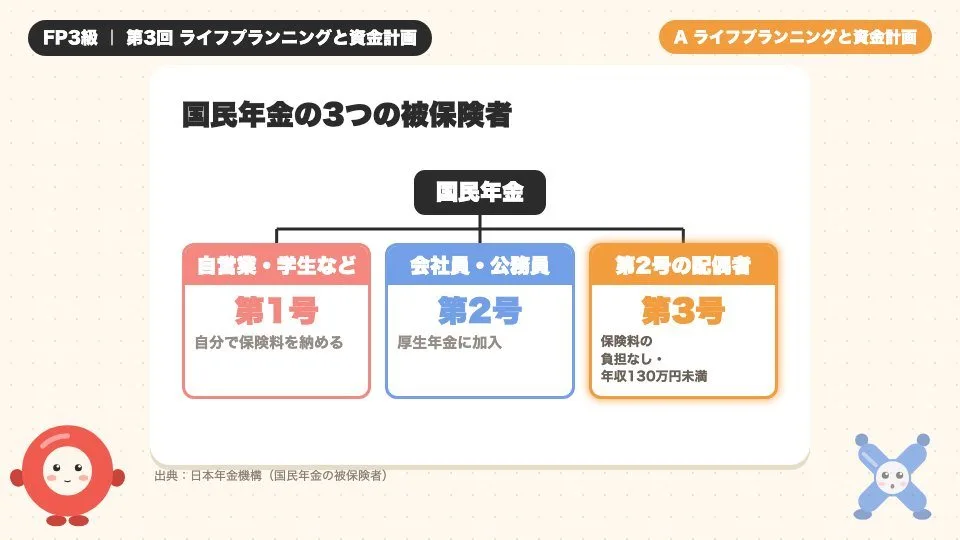
年金を増やす方法もあります。第1号被保険者が、月400円の付加保険料を上乗せして納めると、老齢基礎年金に「年200円×納付した月数」が上乗せされます。2年以上受け取れば、納めた額より得になります。
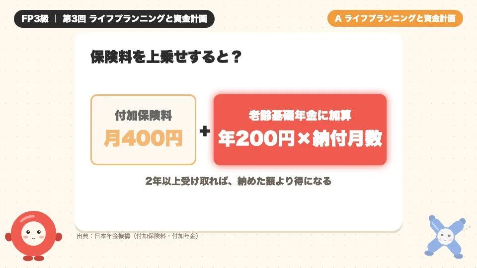
老齢基礎年金は、納付と免除の期間を合わせて10年以上あれば受け取れます。2026年度の満額は月額70,608円です。
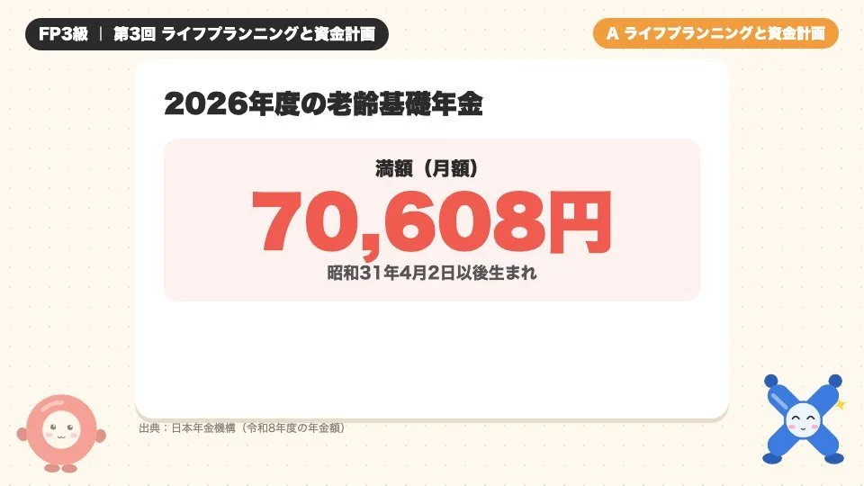
注意受け取り開始の時期はずらせますが、早めても遅らせても金額が変わります。繰上げ受給は60歳から可能で、1カ月ごとに0.4%減り最大24%減額です。繰下げ受給は75歳まで待てて、1カ月ごとに0.7%増え最大84%増額です。
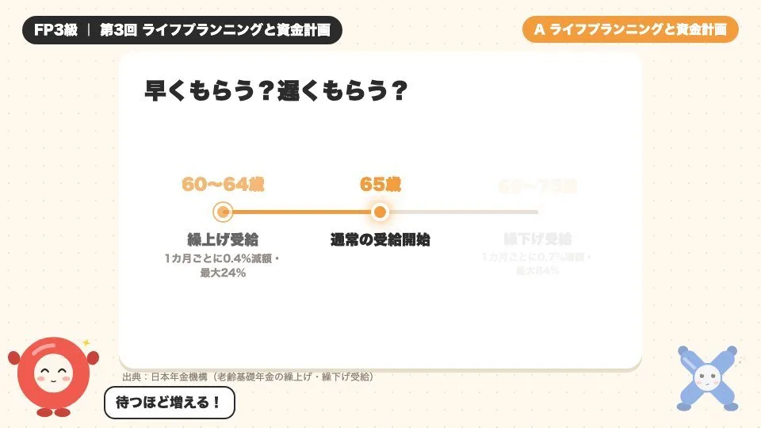
一家の働き手が亡くなったときは、遺族基礎年金が出ます。もらえるのは、子のある配偶者、または子ども本人です。子の年齢は、18歳になった年度の3月31日までです。
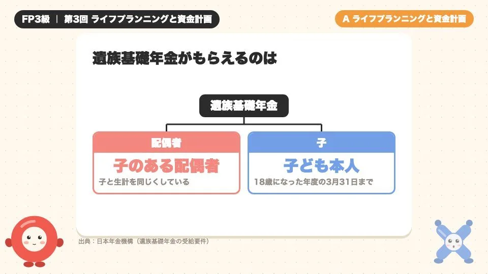
05よくある質問
FPが具体的な保険商品をすすめるのは法律違反ですか？
募集人登録を受けていない人が、具体的な保険会社の商品をすすめると、保険業法違反になります。保険のしくみを一般的に説明するだけなら問題ありません。
公務員は健康保険に入りますか？
入りません。公務員は共済組合という別の制度に加入します。健康保険は、民間企業の会社員が対象です。
国民年金はいつからもらえますか？
原則65歳からです。保険料の納付・免除期間を合わせて10年以上あれば受け取れます。繰上げ受給なら60歳から、繰下げ受給なら75歳まで遅らせることもできます。
老齢基礎年金を増やす方法はありますか？
国民年金の第1号被保険者なら、付加保険料（月400円）を納めると、老齢基礎年金に「年200円×納付月数」が上乗せされます。2年以上受け取れば、納めた額より得になります。
06まとめ
結論FPは、税金・法律・保険や投資のそれぞれで、登録なしに個別の具体的な助言をしてはいけません。社会保険は働き方で加入先が変わり、年金は10年以上の納付・免除期間で受け取れます。
- 保険や投資は、登録なしに具体的な商品をすすめると法律違反になります。
- 医療保険は、会社員は健康保険、公務員は共済組合、自営業・無職は国民健康保険です。
- 老齢基礎年金の2026年度の満額は月額70,608円で、繰上げ・繰下げで金額が変わります。
- 国民年金は第1号・第2号・第3号の3種類で、付加保険料で年金を増やせます。
この記事の数字は、FP3級の法令基準日である2026年4月1日時点の内容です。年金額や保険料は年度ごとに見直されるため、受検前に最新の内容を公式サイトで確認してください。
FP3級の試験のしくみ自体を確認したい人は、FP3級の試験のしくみ・費用・日程まとめ 合格ラインは6割もあわせてご覧ください。